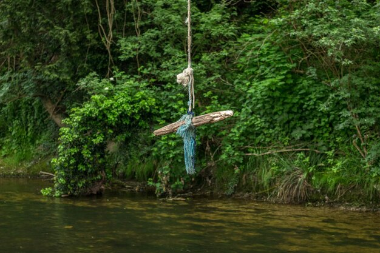

1.Características principales

- Altitud: aproximadamente 3,000 metros sobre el nivel del mar (msnm).
- Tres accesos principales, siendo algunos caminos estrechos o con pasadizos que permitían control defensivo.
- Está construido en una plataforma natural sobre roca calcárea.
Kuélap (o Cuélap) es una ciudadela fortificada construida por la cultura Chachapoyas, ubicada en los Andes nororientales del Perú, en la región Amazonas. Está situada en la cima del cerro Barreta, distrito de Tingo, provincia de Luya.
2.Historia y cultura

- Construcción e ocupación entre los siglos VI al XVI d.C., con su apogeo entre los siglos X y XI.
- Fue abandonado después de la conquista española.
- Redescubierto oficialmente en 1843 por Juan Crisóstomo Nieto.
3.Entorno natural y biodiversidad

- El sitio se encuentra rodeado de bosques de neblina, con alta diversidad de flora como orquídeas, epífitas, árboles propios de la ceja de selva, y fauna andina‑amazónica.
- Clima variado, con días de neblina, temperaturas frescas debido a la altura.
4.Turismo y acceso
- Se puede llegar desde Chachapoyas, luego por transporte terrestre hacia Nuevo Tingo, y de ahí, opciones como teleférico o caminatas.
- El teleférico de Kuélap, inaugurado en 2017, facilita el acceso al sitio reduciendo significantemente el tiempo de trayecto.
- El sitio tiene horarios de visita, tarifas, miradores, senderos interpretativos, servicios básicos para turistas.